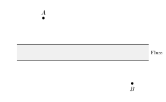
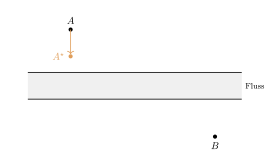
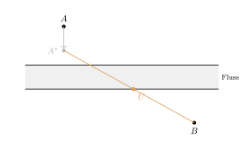
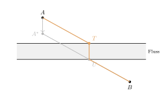

Aufgabe 3.7
Hier ist eine Erweiterung des Brückenproblems. Nun soll der kürzeste Weg von $A$ nach $B$ über eine Brücke $\overline{TU}=3$ führen, die senkrecht zum Flussufer liegt. Wo genau ist die Brücke anzusetzen?

Womit anfangen? Fragen Sie zuerst, welcher Teil des Weges sich überhaupt ändern kann.
- Hängt die Länge der Brücke davon ab, wo sie steht?
- In Aufgabe 3.6 half eine Spiegelung. Was könnte hier an ihre Stelle treten?
- Um welchen Vektor müssten Sie einen der beiden Orte verschieben?
Gegeben: die Orte $A$ und $B$ auf gegenüberliegenden Uferseiten und die Brücke $\overline{TU} = 3$, senkrecht zum Ufer.
Schritt 1: die Lage ansehen

Der Weg besteht aus drei Teilen: $|AT|$, die Brücke $|TU| = 3$ und $|UB|$. Die Brücke ist immer gleich lang, egal wo sie steht — zu minimieren bleibt also nur $|AT| + |UB|$.
Schritt 2: $A$ um den Brückenvektor verschieben

Warum das hilft: Die Brücke zeigt immer in dieselbe Richtung und ist immer gleich lang. Verschiebt man $A$ um genau diesen Vektor nach $A^\star$, so ist $ATUA^\star$ für jede Brückenlage ein Parallelogramm, und damit $|AT| = |A^\star U|$. Der obere Teilweg lässt sich also durch einen gleich langen unteren ersetzen. Übrig bleibt $|A^\star U| + |UB|$ — ein Weg von $A^\star$ nach $B$ über einen einzigen Uferpunkt.
Schritt 3: $A^\star$ mit $B$ verbinden

Warum das die Antwort gibt: $A^\star$ und $B$ liegen auf verschiedenen Seiten des unteren Ufers. Deshalb gibt es unter allen Wegen $A^\star \to U \to B$ einen geraden, und der gerade ist der kürzeste. Wo die Strecke $\overline{A^\star B}$ das Ufer schneidet, muss also $U$ liegen.
Schritt 4: die Brücke aufstellen

In $U$ die Senkrechte zum Ufer errichten; ihr Fusspunkt auf dem anderen Ufer ist $T$. Der gesuchte Weg lautet $A \to T \to U \to B$.
Warum kein anderer Weg kürzer ist
\[|AT| + |UB| = |A^\star U| + |UB| \geq |A^\star B|,\] mit Gleichheit genau dann, wenn $A^\star$, $U$ und $B$ auf einer Geraden liegen. Genau das leistet die Konstruktion. Der Gesamtweg ist damit $|A^\star B| + 3$, und kürzer geht es nicht.
Im Video: Etappe 7 · Winter‘sche Grunderfahrungen bei 4:59